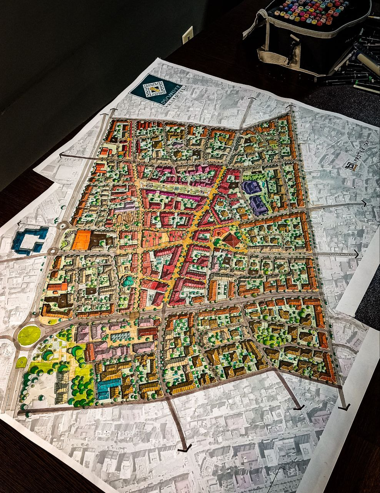
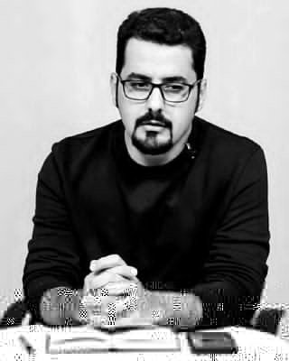

معماری · طراحی شهری · شهرسازی · پژوهش
از بنا تا شهر؛ طراحی در پیوند با زمینه، زندگی و آینده.
پرتفولیوی حرفهای علی جنابیان؛ مجموعهای از پروژههای معماری، طراحی شهری، برنامهریزی شهری و پژوهشهای کاربردی در مقیاسهای مختلف.
طرح جامع مرکز شهر عثمانیه
طرح جامع مرکز شهر عثمانیه، ترکیه؛ طراحی و ترسیم دستی با ماژیک.فرآیند طراحی
تصویری از روند طراحی دستی پروژه عثمانیه با ماژیک؛ بخشی از فرآیند توسعه ایده و ارائه طرح.

پروژهها
چهار حوزه از مقیاس معماری تا شهر و پژوهش؛ هر پروژه میتواند در بیش از یک حوزه برچسبگذاری شود.
درباره من
تمرکز حرفهای بر طراحی و پژوهش میانرشتهای با نگاه همزمان به مقیاس بنا، فضاهای شهری و ساختارهای کلان.

رویکرد من بر این ایده استوار است که طراحی خوب از خواندن دقیق زمینه آغاز میشود؛ از مورفولوژی و حافظه جمعی تا زیرساخت، اکولوژی و امکان اجرا.
4حوزه اصلی فعالیت
20+سال تجربه حرفهای
GISتحلیل فضایی و دادهمحور
R&Dپژوهش، ضابطه و راهنمای طراحی